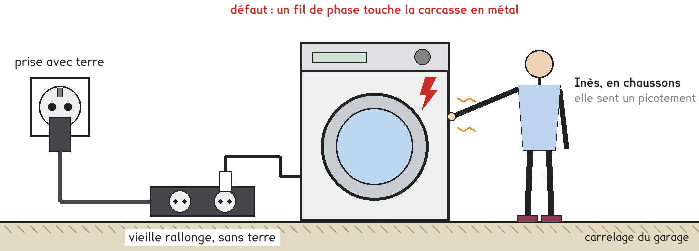
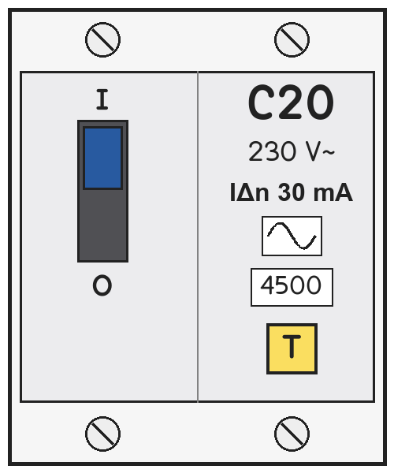
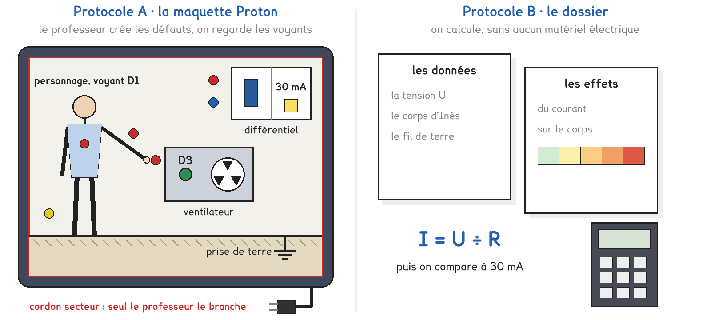
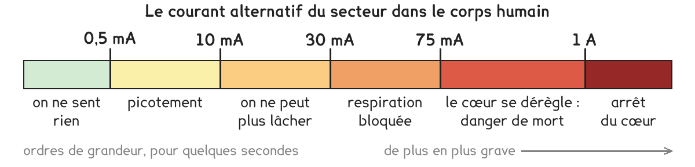

CAP à Tle Bac Pro · toutes spécialités · TP commun CAP-07
La machine à laver d'Inès pique quand on la touche : qu'est-ce qui l'aurait protégée ?
4 figures
Sujet. Inès a installé sa machine à laver au garage, sur une vieille rallonge sans fiche de terre. Ce matin, en chaussons, elle a senti un picotement en touchant la machine.

Problématique : la machine à laver d’Inès pique quand on la touche. Qu’est-ce qui l’aurait protégée ?
Au laboratoire, personne ne touche un appareil en défaut. Le corps humain est remplacé par le personnage de la maquette Proton, ou par un calcul.
Dans le tableau électrique d’une maison, plusieurs dispositifs protègent l’installation.
a) Pour chaque dispositif, entourer ce qu’il protège surtout.
| Le dispositif | Il protège surtout, entourer |
|---|---|
| le fusible, dans son coupe-circuit | les matériels · les personnes |
| le disjoncteur de 20 A | les matériels · les personnes |
| le disjoncteur différentiel 30 mA | les matériels · les personnes |
| le fil vert-jaune, relié à la terre | les matériels · les personnes |
Série · milliampères et ampères. On divise par 1 000 pour passer en ampères, on multiplie par 1 000 pour passer en milliampères. Le premier est fait.
| 30 mA = 0,03 A | 150 mA = …………………… A | 8 mA = …………………… A |
|---|---|---|
| 0,6 A = …………………… mA | 0,075 A = …………………… mA | 2 A = …………………… mA |
Voici la face avant du disjoncteur différentiel du tableau d’Inès.

b) Relever ce qui est écrit sur la face avant.
| Ce qu’on cherche | Écrit dessus | L’unité, en lettres |
|---|---|---|
| le courant normal maximal, son calibre | C …………… | …………………………… |
| le courant de fuite qui le fait couper | …………… mA | …………………………… |
| le bouton pour l’essayer | …………… | — |
Deux protocoles répondent à la même question. Il n’y a qu’une maquette : une partie de la classe la suit avec le professeur, l’autre travaille sur dossier. On compare à la fin.

Protocole A · la maquette Proton. Elle reproduit en petit une maison : un différentiel, un ventilateur à carcasse en métal, une prise de terre et un personnage. Le professeur crée les défauts ; on regarde deux voyants, D1 dans la poitrine du personnage, D3 sur le ventilateur.
Protocole B · le dossier. On calcule le courant qui traverserait le corps d’Inès, ou le fil de terre, avec I = U ÷ R, et on le compare au seuil du différentiel.
c) Compléter le tableau pour comparer les deux protocoles.
| Protocole A | Protocole B | |
|---|---|---|
| On va, entourer | observer · calculer | observer · calculer |
| On voit le différentiel couper | oui · non | oui · non |
| Un vrai corps est traversé | oui · non | oui · non |
Le choix se fait maintenant. Le professeur peut imposer le protocole qui reste libre.
d) Entourer votre protocole, puis la raison.
Protocole A · Protocole B, parce que : on veut voir · on veut calculer
Une hypothèse : la phase touche la carcasse, sans fil de terre, et personne ne touche.
e) Le différentiel 30 mA, entourer : coupe le courant · ne coupe pas le courant
Avant de commencer
Seul le professeur branche la maquette, la met sous tension, change les cordons maquette débranchée et réarme le différentiel.
On ne touche ni borne, ni cordon, ni prise : le corps, c’est le personnage.
D1 allumé : un courant traverse le corps. D3 éteint : le courant est coupé.
U = 230 V. Le tableau d’Inès : un différentiel 30 mA, un disjoncteur de 20 A.
| Le chemin du courant de défaut | Sa résistance R |
|---|---|
| par le corps d’Inès, en chaussons, sur le carrelage sec | 57 500 Ω |
| par le corps d’Inès, pieds nus, sur le sol mouillé | 1 150 Ω |
| par le fil vert-jaune et la terre | 46 Ω |
Ce que le courant fait au corps :

Chaque courant se compare à 30 mA. Les deux protocoles se retrouvent pour f et g.
f) Schématiser la situation où Inès touche la machine, sans fil de terre.
Dessiner la prise, la machine et son défaut, Inès, le sol.
Repasser en rouge le chemin du courant, de la phase jusqu’au sol.
Le schéma se dessine sur la feuille du TP.
g) Compléter le tableau, pour les deux protocoles.
Le protocole A répond d’après les voyants, le protocole B d’après les calculs.
| La situation | Le corps est traversé | Le courant est coupé |
|---|---|---|
| 2 · un défaut, personne ne touche | oui · non | oui · non |
| 3 · on touche, sans différentiel | oui · non | oui · non |
| 4 · on touche, avec le différentiel | oui · non | oui · non |
| 5 · fil de terre et différentiel | oui · non | oui · non |
h) Situation 2, le différentiel, entourer : a coupé · n’a pas coupé
Votre hypothèse e est confirmée : oui · non
i) Comparer votre tableau g avec celui d’un groupe qui a pris l’autre protocole.
Les mêmes réponses : oui · non. Sinon, à la situation n° ……………
j) Pour que le différentiel coupe avant qu’on touche, il faut, entourer :
un fusible plus gros · le fil vert-jaune relié à la terre · un disjoncteur de 32 A
k) Le bouton T, pressé une fois par mois, sert à, entourer :
allumer l’installation · vérifier que le différentiel coupe · remettre le courant
Série · I = U ÷ R, puis comparer à 30 mA. U en volts, R en ohms. Attention aux zéros. Le premier est fait.
| I = 230 ÷ 2 300 = 0,1 A : plus | I = 230 ÷ 23 000 = ………… A : plus · moins |
|---|---|
| I = 230 ÷ 115 = ………… A : plus · moins | I = 24 ÷ 2 400 = ………… A : plus · moins |
| I = 12 ÷ 300 = ………… A : plus · moins | I = 230 ÷ 9 200 = ………… A : plus · moins |
Pour finir, on revient à Inès.
l) Répondre à la problématique en une phrase : qu’est-ce qui aurait protégé Inès ?
Ce que ce TP a établi, à écrire sous la dictée du professeur :
À RETENIR
À compléter en classe, sur la feuille du TP.
TP commun de physique-chimie, toutes spécialités. Le travail se fait sur la feuille du TP : cette page en est la version à l'écran, sans les lignes à remplir. Rien n'est enregistré.